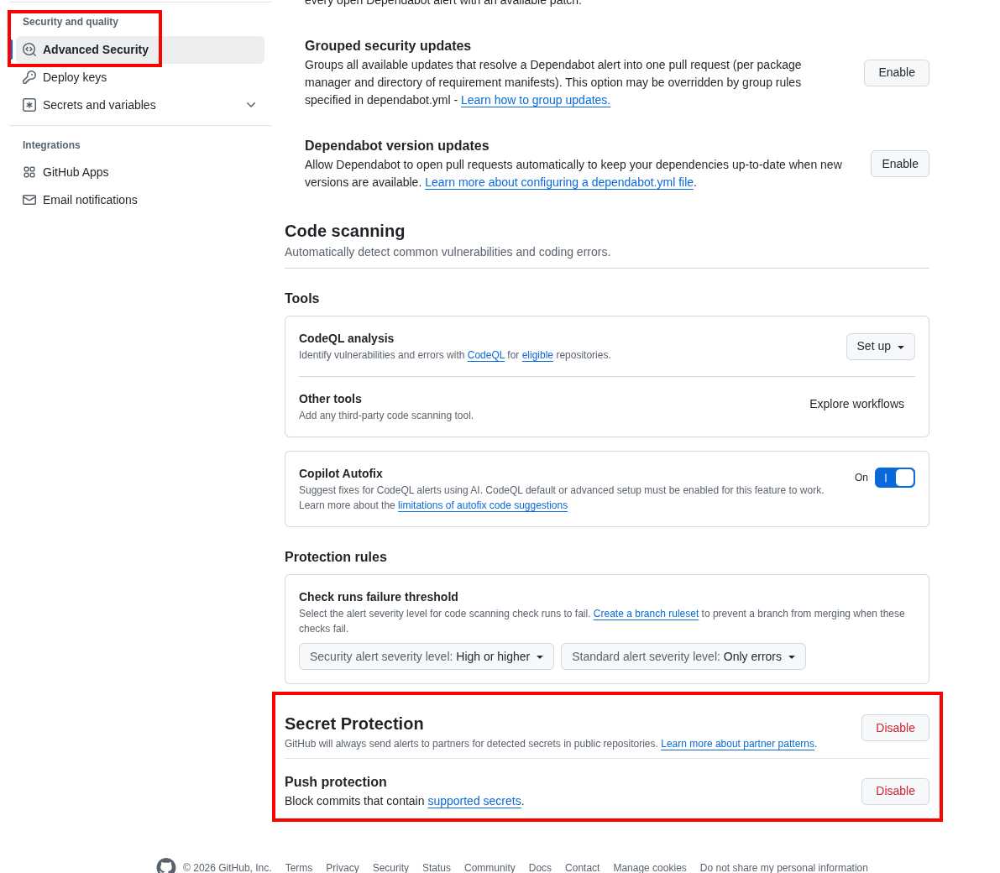
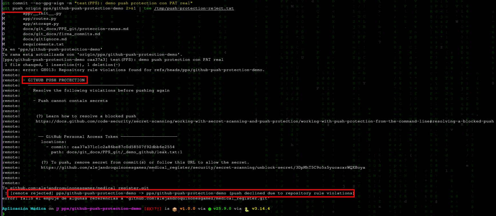

GitHub — Secret Scanning y Push Protection¶
Autores: Alejandro Quiñones Gámez & Adrián Bertos Gómez
Asignatura: PPS — Puesta a Producción Segura
Curso: Curso de Especialización en Ciberseguridad en Tecnologías de la Información
Centro: IES Zaidín-Vergeles
Repositorios de este trabajo¶
Las pruebas de GitHub (secret scanning, push protection, reglas de rama, Actions) se documentan sobre los dos repositorios del curso:
Proyecto |
Repositorio GitHub |
Remoto |
Rama habitual |
|---|---|---|---|
Cliente Android (APK) |
|
|
|
Backend |
|
|
Fijar o comprobar el remoto del Android:
git clone git@github.com:alejandroquinonesgamez/medical_register_apk.git
cd medical_register_apk
git remote set-url origin git@github.com:alejandroquinonesgamez/medical_register_apk.git
git remote -v
git push origin main
Backend (documentación y workflows en este repositorio):
# Raíz del clone de medical_register
git remote -v
git push origin dev
Cada repositorio en GitHub tiene su propia pestaña Settings / Security; repite la configuración en
medical_register_apky enmedical_registersi la práctica lo exige en ambos.
1. Introducción¶
En el desarrollo moderno, la filtración accidental de credenciales es un riesgo crítico. GitHub ofrece dos mecanismos nativos complementarios:
Mecanismo |
Momento |
Objetivo |
|---|---|---|
Secret scanning |
Tras el código ya en el remoto |
Detectar secretos en reposo, alertar y (con proveedores asociados) facilitar la revocación. |
Push protection |
En el |
Bloquear antes de que el secreto entre en el historial público o compartido. |
Este documento resume la teoría del enunciado y propone una resolución práctica documentable: activación, gestión de alertas, simulación controlada de fuga y prueba de bloqueo en push.
Referencias oficiales:
2. Secret scanning (escaneo de secretos)¶
2.1. Qué hace¶
GitHub analiza el contenido del repositorio (incluido el historial en los planes que lo permiten) buscando patrones de más de doscientos proveedores (AWS, Google Cloud, Stripe, OpenAI, etc.). En repositorios públicos suele estar activo de forma predeterminada y es gratuito. En privados, puede requerir activación manual o políticas de organización / Enterprise.
Si el token pertenece a un proveedor colaborador, GitHub puede notificar al proveedor para que revoque o invalide el secreto, reduciendo la ventana de abuso.
2.2. Gestión de alertas¶
Cuando se detecta un posible secreto ya presente en el repo, la alerta se puede cerrar de tres maneras (según el enunciado):
Cierre |
Cuándo usarlo |
|---|---|
Resolved as real secret |
Era material real: se revoca/rotación de credencial y se limpia el código (y el historial si hace falta). |
Used in tests |
Es un valor ficticio usado solo en pruebas (idealmente con patrones que no colisionen con producción). |
False positive |
El patrón coincide pero no es un secreto (p. ej. un identificador con formato parecido). |
2.3. Actividad: simular una filtración y remediar (entorno seguro)¶
No uses una clave real de producción. El procedimiento documentable es:
Preparar un token de prueba revocable
Por ejemplo, un Personal Access Token de GitHub con permisos mínimos y caducidad de un día, o un secreto de un servicio de sandbox que puedas invalidar al instante.Introducirlo en una rama de prueba en un fichero que luego borrarás (p. ej.
tmp/leak-demo.txt). Haz commit solo en un fork o repo de práctica, no en un remoto compartido con datos reales.Comprobar la alerta en Security → Secret scanning (o el nombre equivalente según la UI actual).
Remediar siguiendo la guía oficial Remediating a leaked secret:
Revocar el secreto en el origen (GitHub / consola del proveedor).
Eliminar el secreto del árbol de trabajo y del historial si ya se hizo push a ramas compartidas (p. ej.
git filter-repoo BFG; en ramas no fusionadas puede bastar con borrar la rama remota).
Cerrar la alerta en GitHub con el motivo correcto y documentar capturas: alerta abierta, revocación en el proveedor, commit de limpieza, alerta cerrada.
En un repositorio académico sin GitHub Advanced Security en privado, algunas opciones pueden no estar disponibles; en ese caso documenta la limitación y adjunta capturas de la documentación de GitHub sobre qué habilitaría un administrador.
3. Push protection¶
3.1. Diferencia respecto al escaneo clásico¶
El escaneo reactivo encuentra el problema cuando el secreto ya está en el remoto. Push protection intercepta el git push en los servidores de GitHub, analiza los cambios y rechaza el envío si detecta un patrón de alta confianza.
Flujo resumido:
Escaneo de los blobs que se intentan subir.
Detección de coincidencias con patrones de proveedores o (en Enterprise) patrones personalizados.
Bloqueo del push con mensaje en la terminal y enlace para gestionar la incidencia.
3.2. Tipos de protección¶
Partner patterns: patrones validados con proveedores (alta confianza).
Custom patterns (GitHub Enterprise): expresiones regulares propias de la organización (tokens internos, prefijos corporativos, etc.).
3.3. Bypass y auditoría¶
Si el bloqueo es un falso positivo o un secreto de test, la interfaz o la CLI permiten indicar el motivo, por ejemplo:
Used in tests
False positive
Will fix later (desaconsejado salvo excepción, queda trazabilidad)
Cada bypass genera registro para administración: alertas en Security → Secret scanning como Bypassed, notificaciones por email, etc.
3.4. Beneficios (resumen del enunciado)¶
Prevención real: el secreto no llega al servidor.
Ahorro de tiempo: evita horas de limpieza de historial.
Cultura de seguridad: feedback inmediato al desarrollador.
Cumplimiento: evidencia de control sobre credenciales (SOC 2, ISO 27001, etc.).
3.5. Actividad: habilitar Push protection y documentar una prueba¶
En el repositorio: Settings → Advanced Security (o Code security and analysis).
Activar Secret Protection y Push protection según Enabling push protection for your repository.

Crear un PAT de prueba (caducidad 1 día) y un commit con el token en un fichero de demo.
git pushdebe ser rechazado (GH013, Push cannot contain secrets).Revocar el PAT, eliminar el fichero del commit y no usar bypass en producción.
PAT de prueba: permisos mínimos¶
El token no se usa para llamar a la API; solo debe tener formato válido (ghp_... o github_pat_...) para que Push protection lo detecte.
Tipo de token |
Scopes / permisos recomendados |
|---|---|
Fine-grained |
Repositorio solo |
Classic |
Ningún scope marcado; caducidad 1 día |
Tras la demo: revocar el PAT en Developer settings → Personal access tokens.
Comandos usados en medical_register¶
# Raíz del clone de medical_register
git checkout dev && git pull origin dev
git checkout -b pps/github-push-protection-demo
mkdir -p docs/git_docs/PPS_git/_demo_github
printf '%s\n' 'ghp_...' > docs/git_docs/PPS_git/_demo_github/leak.txt # PAT real de prueba
git add docs/git_docs/PPS_git/_demo_github/leak.txt
git commit --no-gpg-sign -m "test(PPS): demo push protection con PAT real"
git push -u origin pps/github-push-protection-demo
Resultado esperado en terminal: GH013, GITHUB PUSH PROTECTION, GitHub Personal Access Token, ruta docs/git_docs/PPS_git/_demo_github/leak.txt.

Repositorio de la prueba: alejandroquinonesgamez/medical_register. Rama: pps/github-push-protection-demo.
GitHub impidió que el PAT entrara en el historial remoto (GH013). La remediación correcta es revocar el token de prueba (aunque el push fallara) y no confiar en borrar el fichero local sin rotación.
Con push protection activo el secreto no llega al remoto, por lo que no suele generarse alerta en Secret scanning. No se aportan capturas alerta-abierta / alerta-cerrada: la evidencia del control es la configuración (paso 2) y el rechazo del push. El PAT de prueba usado en la demo caducó o fue revocado tras el ejercicio.
4. Relación con los proyectos del espacio de trabajo¶
Backend (
medical_register, ramadev): en.github/workflows/existencoverage.ymlybuild-docs.yml. La protección de ramas (véaseproteccion-ramas.md) puede exigir que esos checks pasen antes de fusionar.Android (
medical_register_apk, ramamain): si añades Actions allí, los nombres de los checks aparecerán en la UI de GitHub de ese repo.
Push protection y Secret scanning son independientes de los status checks (secretos frente a calidad de código).
Autores: Alejandro Quiñones Gámez & Adrián Bertos Gómez
Asignatura: PPS — Puesta a Producción Segura
Curso: Curso de Especialización en Ciberseguridad en Tecnologías de la Información
Centro: IES Zaidín-Vergeles